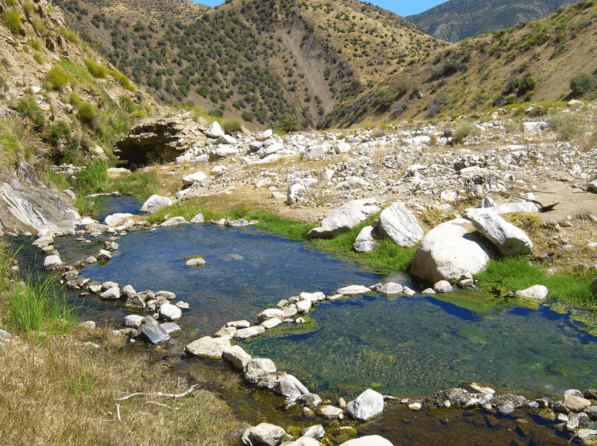

Camping in Ojai is a great way to escape the hustle and bustle of the city and immerse oneself in nature. The Ojai Valley is located in Ventura County, California, and offers a diverse range of camping options. Whether you're looking for a secluded spot in the mountains or a campsite with all the amenities, there's something for everyone in Ojai.
One of the highlights of camping in Ojai is exploring the breathtaking scenery. The area is known for its rugged mountains, picturesque valleys, and stunning sunsets. Hiking trails are abundant and range from easy strolls to challenging treks.
Lots of Hiking
One popular trail is the Rose Valley Falls Trail, which takes hikers to a stunning 300-foot waterfall. Another popular destination is the Pratt Trail, which offers panoramic views of the valley.
Another great activity while camping in Ojai is visiting the hot springs. The natural hot springs in the area are a unique way to relax and unwind. One popular spot is the Matilija Hot Springs, which is located in the Los Padres National Forest.
"Playing in the hot springs is the best!" - Parker Ivey (4-years-old)
The hot springs are nestled in a remote canyon and are accessible by hiking trails. The springs offer a tranquil and serene atmosphere, surrounded by the sounds of nature.
Nature Fans Rejoice
One great way to bond with family while camping in Ojai is by going on a nature walk. The area is home to a diverse range of flora and fauna, and children will love spotting wildlife such as deer, rabbits, and squirrels.
"I love seeing all of the birds." - Violet Ivey (7-years-old)
The walks can also be educational, as parents can teach their children about the different plants and animals they encounter.
Other fun activity for families while camping in Ojai is stargazing. The area has clear skies and is free from light pollution, making it an ideal location for observing the stars. Kids will love learning about the constellations and spotting shooting stars.
How to Get There
Ojai is located about 90 miles north of Los Angeles and is easily accessible by car. The drive takes about two hours, and the route is scenic and picturesque.
Wonderful Weather
The weather in Ojai is mild year-round, making it an ideal destination for camping. The summers are warm and dry, with temperatures ranging from 70 to 90 degrees Fahrenheit. The winters are cool and wet, with temperatures ranging from 40 to 60 degrees Fahrenheit.
OJAI WEATHERHow to Book a Campsite
There are several campgrounds in the area, and they offer a range of amenities. Some campgrounds have showers and bathrooms, while others are more primitive. The campgrounds are located in the mountains and offer stunning views of the valley.
It's important to plan ahead, so make sure to give yourself some time to book your campsite.
To book your family adventure, click the link below to start your reservation.
https://www.recreation.gov/camping/campgrounds/273845Happy camping!